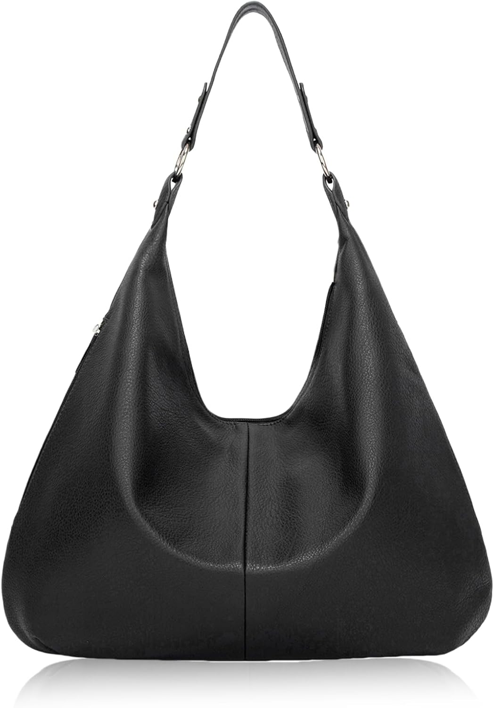

Aucuu Bolsos Hobo: el bolso del día 36
Los días largos piden aliados que no estorben. El bolso de hoy es el Aucuu Bolsos Hobo. No es un capricho de escaparate: es el que acompaña cargar con lo justo y bien elegido, con 4,1★ de nota media y 63 valoraciones que respaldan la decisión.

Un bolso no cambia tu día. Cambia la manera de entrar en él: con lo que necesitas, sin lo que sobra y con la certeza de que otras 63 personas ya hicieron la misma elección antes que tú. Lo que más repiten sus compradoras: calidad.